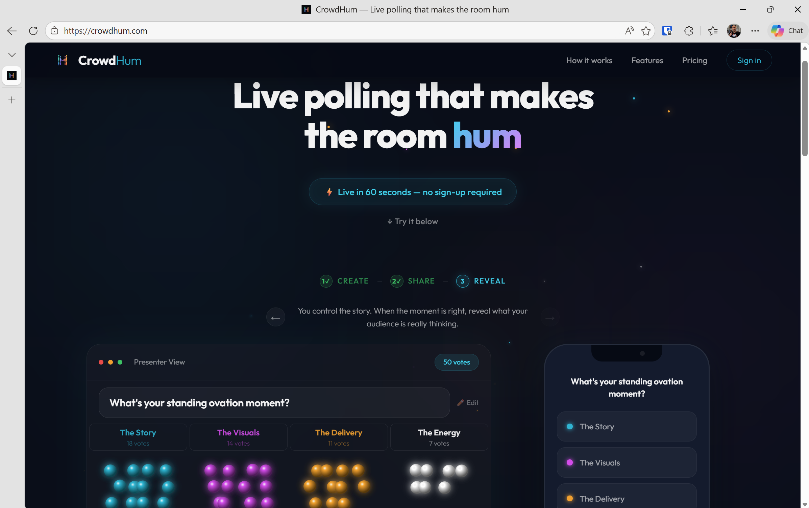
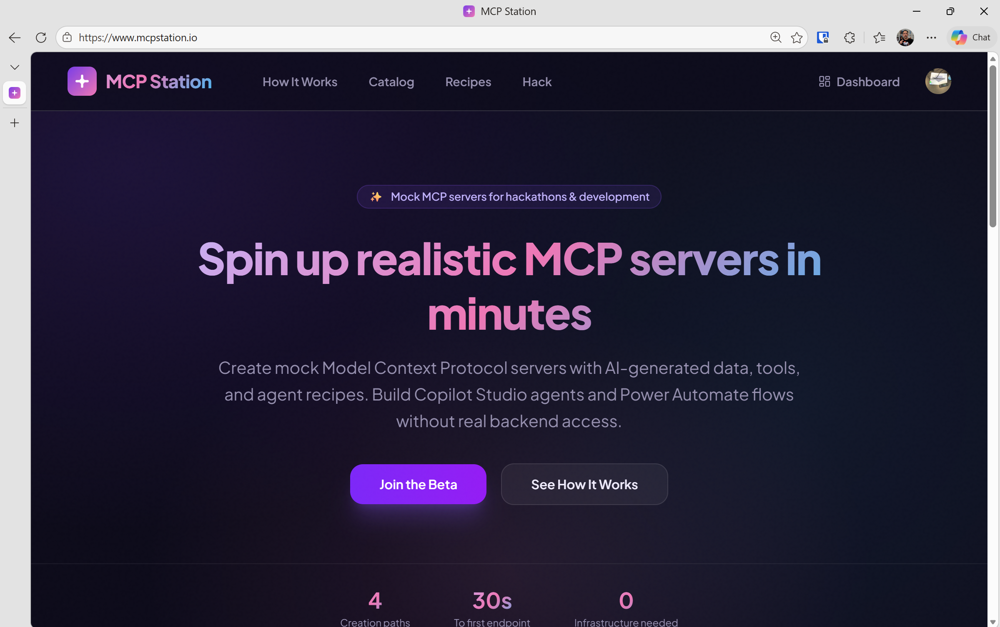
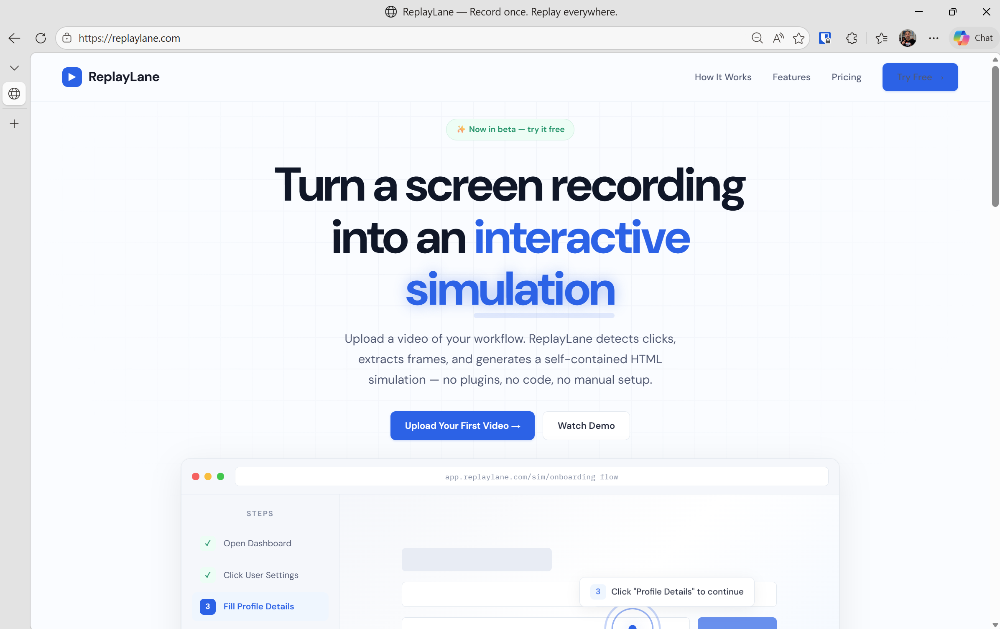
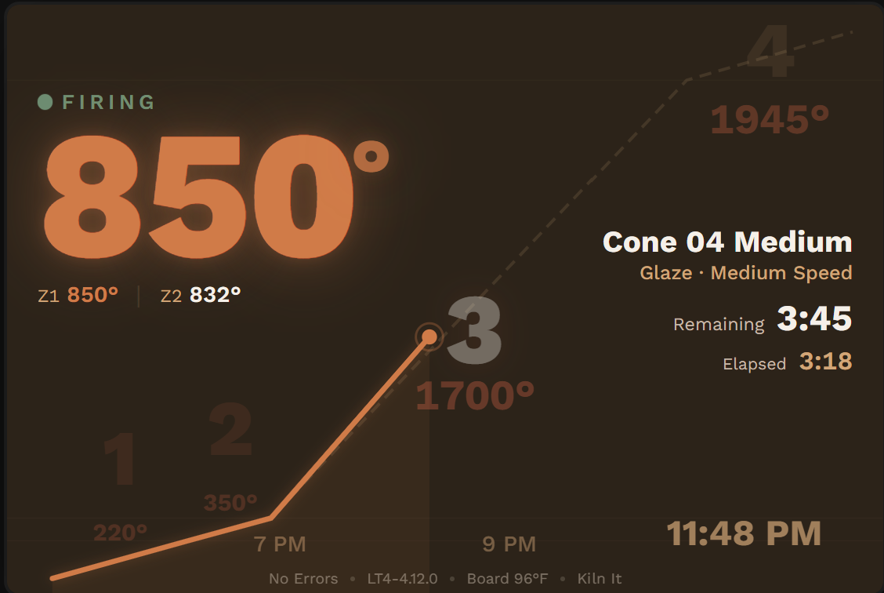
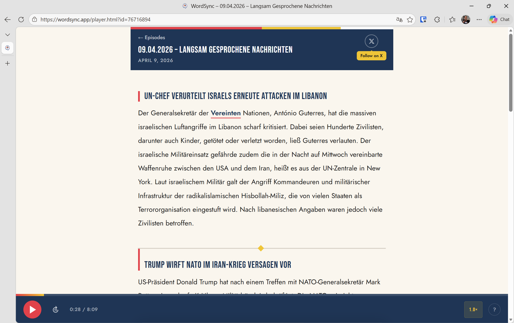
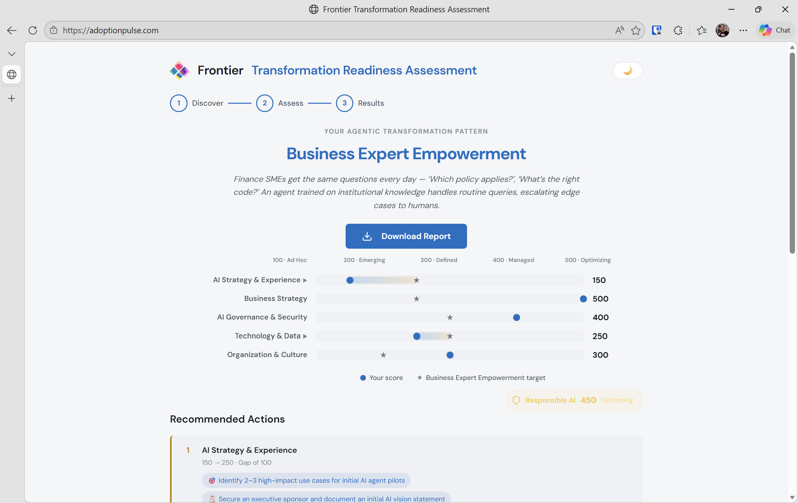
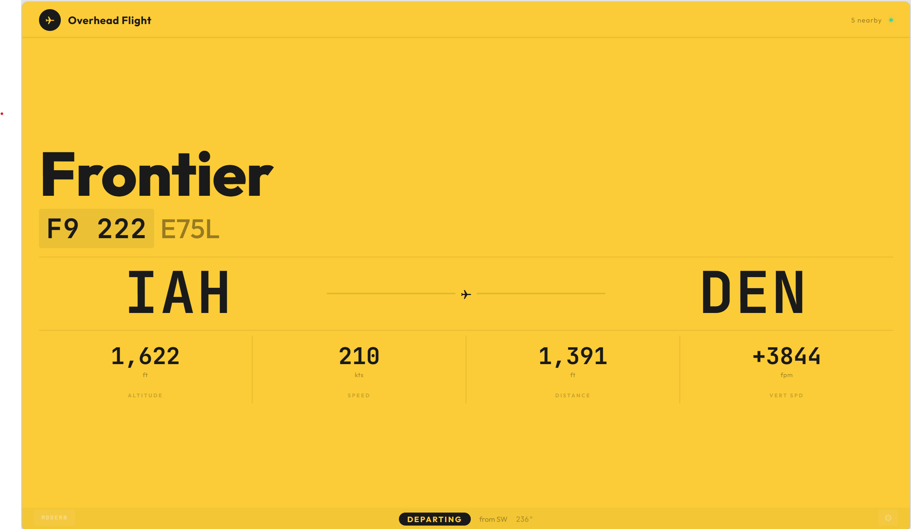

I build tools at the intersection of AI, real-time data, and delightful UX — mostly to scratch my own itch, often ending up as something others can use too.

Live audience engagement — physics-animated polling where votes become glowing spheres, plus dynamic word clouds with AI clustering. No app install — scan a QR code and watch results materialize on screen. Built for speakers, facilitators, and storytellers.

Generate mock MCP servers from a prompt, sample data, or OpenAPI spec — and browse a catalog of pre-built servers and agent recipes. Deploy to Copilot Studio, Claude Desktop, or Cursor. Free for anyone to use at hackathons.

Turn any screen recording into an interactive click-through demo. Upload a video and get back a shareable HTML simulation — viewers click through each step at their own pace instead of watching a video. Perfect for product walkthroughs, training guides, and documentation.

Real-time kiln monitoring for ceramic artists at kilnsense.com. Sign in with your KilnAid account to track temperature, firing schedule, and kiln status from any browser.


An interactive AI adoption maturity assessment that guides organizations through a decision-tree questionnaire to evaluate their AI readiness across a three-phase model — Empower, Reshape, and Reinvent.

A Raspberry Pi kiosk app that tracks aircraft overhead in real time using OpenSky Network data. Features two display themes — a vintage Solari split-flap board and a modern Heathrow-style signage — designed for 7″ and 10″ touchscreens.